|
|
| soft corals text index | photo index |
| Phylum Cnidaria > Class Anthozoa > Subclass Alcyonaria/Octocorallia > Order Alcyonacea |
| Fine
feathery soft coral Briareum excavatum* Family Briareidae updated Aug 2025 Where seen? This colony of tiny animals is seen on our Southern shores, but is often overlooked. The colony grows on stones and hard surfaces, including litter on the shores! Briareum stechei might be the accepted current name. Features: Colony about 10-15cm, sometimes much larger. Polyps about 1cm in diameter, on stalks about 1cm long emerging from low to tubular mounds (calyces). The eight skinny tentacles have short thin brown branches in 1 row on both sides of each tentacle. Oral disk and tentacles white, greenish or bluish. The polyps emerge through calyces embedded in a common tissue that encrusts hard surfaces. The polyps don't pulsate and can slowly retract completely leaving only the calyces which leave a bumpy surface on the common tissue. The tissue is mangenta purple due to the colour of the sclerites (tiny spikes of calcium carbonate). The animals harbour symbiotic algae (zooxanthellae) and is thus more common in clearer waters. Status and threats: There is inadequate information as at 2024 to make an informed assesment of its conservation status in Singapore. |
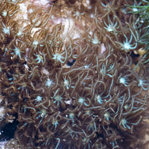 Sisters Island, Jan 12 |
 |
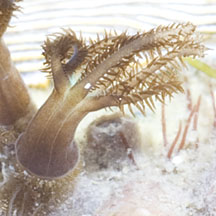 Polyps emerge from calyces. |
|
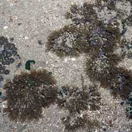 Beting Bronok, Jun 06 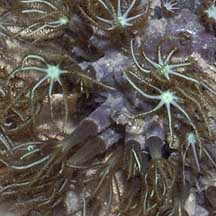 |
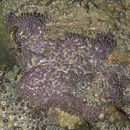 Pulau Tekukor, May 07 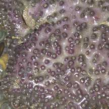 |
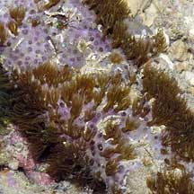 Encrusting a discarded bottle. 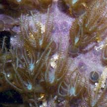 Sentosa, Sep 04 |
*ID needs confirmation. Species are difficult to positively identify without close examination.
On this website, they are grouped by external features for convenience of display.
| Fine feathery soft corals on Singapore shores |
On wildsingapore
flickr
|
| Other sightings on Singapore shores |
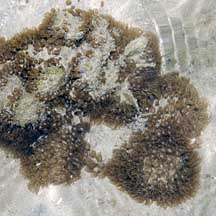 Pulau Pawai, Dec 09 |
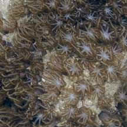 |
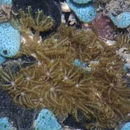 Pulau Senang. Jun 10 |
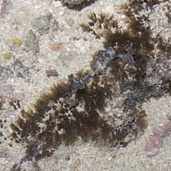 Terumbu Selegie, Jun 11 |
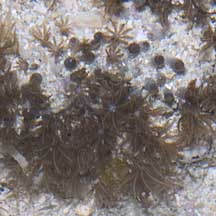 |
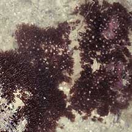 Pulau Berkas, Feb 22 Photo shared by Toh Chay Hoon on facebook. |
|
Links
References
|